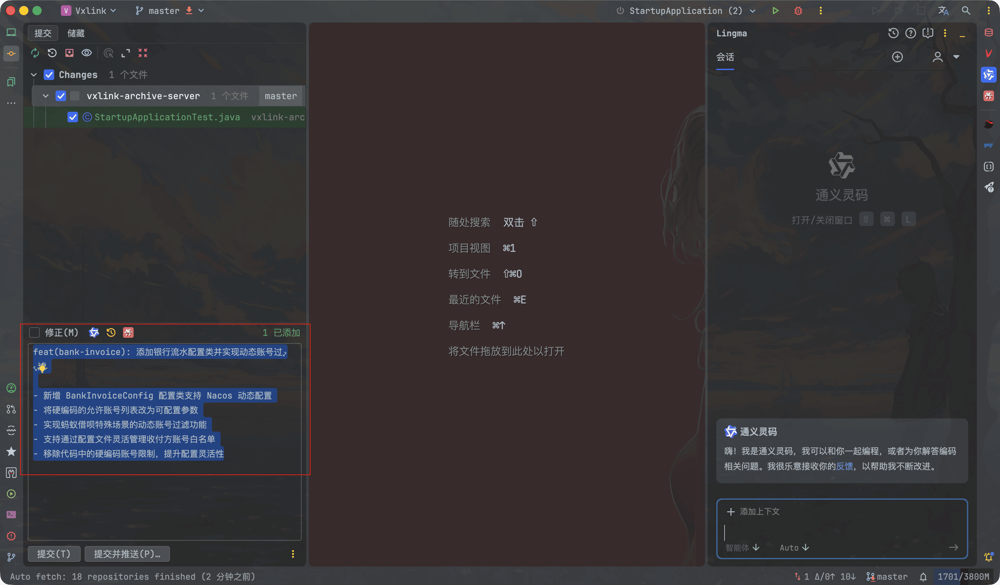
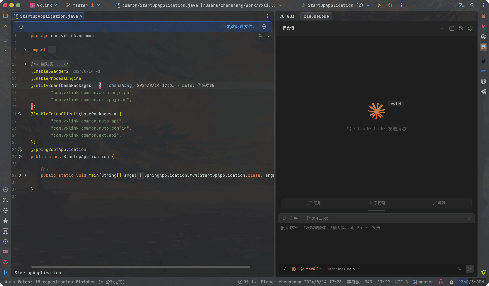
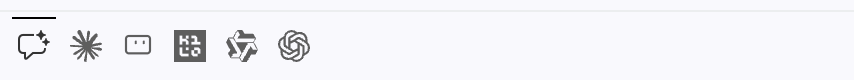
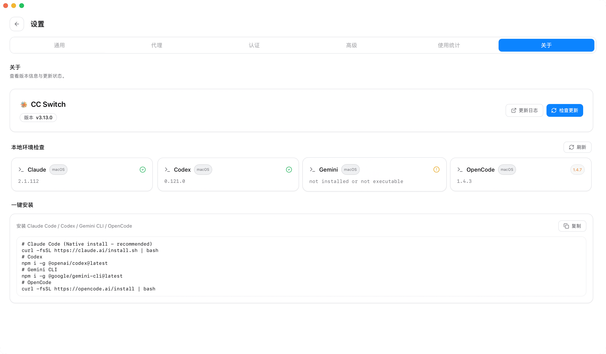

Vibe Coding：动嘴不动手
最近有个概念很火： Vibe Coding 。
Vibe Coding（氛围编程） 是 2025 年初由 OpenAI 前研究员 Andrej Karpathy 提出的: 由 AI 驱动的 新型软件开发范式 。核心是： 你用自然语言描述想法 ，AI 直接生成可运行的代码 。
核心思想：改代码或写文章，动嘴就够了，不需要自己上手。
| 传统方式 | Vibe Coding |
|---|---|
| 打开 IDE → 找文件 → 定位代码 → 手动改 → 保存 → 测试通过 → 完成 | 打开 Agent -> 你说"帮我实现/修复" → AI 实现或修复→ 测试通过 → 完成 |
| 你是执行者 | 你是指挥官，AI 是执行者 |
因此我们需要一个 Ai Coding Agent。还要学一门新的语言：自然语言。以前编程方式称为古法编程，不使用Vibe Coding 的程序员，我称为上古程序员。
AI 写代码有诸多好处，这里不表。但AI并不是万能的，Vibe Coding 目前还有一些弊端，但只要控制得当，还是一把好武器。
Vibe Coding 的缺点以及应对
-
代码质量不稳定，时好时坏，可维护性差，安全性风险高
自己用下来，AI 生成的代码往往「能用但不优雅」—— 结构混乱、冗余，长期维护成本高。易生成存在漏洞的代码（SQL 注入、XSS、权限绕过、敏感信息泄露等），非专业开发者很难发现。
有两个观点：
观点一：应用能跑就行，我不在乎代码的好不好，优不优美，只要能实现我的业务就行，就算有问题，写好提示词，让Ai自己打补丁不就好了，甚至不用review代码，测出问题再改就行。（这种想法现在会被认为是异教徒）
观点二：必须要严格可控，防止代码腐化。因此极致的要求代码review，甚至换个模型再review代码。
我觉得AI的发展一定是朝着 “观点一” 去的，对于开发同学，我们自己开发的软件甚至都是黑盒的，你也不会去关心AI是怎么实现的，你应该作为一个用户去审查AI给你的功能，而不是作为一名程序员去审查AI给你的代码，传统的程序员这个职业一定会换一种形式，不再是一行一行的coding了，而是一行一行的promting了。但这个还有很长的路要走，现阶段我持观点二，尤其是在已有项目，特别是金融项目（涉及钱的需要时刻紧绷一根弦），我们不能完全信任AI写出来的代码，必须做好review防止代码腐化。另外开发同学需要对AI生成的代码负责，需要确保AI生成代码的可维护性和可靠性，AI只是帮你写代码，出了问题，还是杀程序员祭天！
如何应对这个问题：《Coding Agent 常用操作指南》- 只有具有 代码安全意识、专业知识背景、有实战经验的程序员方能更好的驾驭AI写的代码。
-
Bug 排查困难，修复容易走偏
AI写的代码基本上没问题，但往往是这样，只要有Bug，那就是大Bug! 我用AI写的从备注提取身份证和债务人姓名的程序，就遇到了边界没有考虑的情况。不过就算是人，也不一定能考虑到要过滤特殊字符的所有情况。因此AI 生成的 Bug 通常隐蔽，排查难度大。虽然可以直接让 AI 修复，但需要 有经验的程序员写出高质量的提示词才行，否则 AI 会像无头苍蝇一样乱撞，导致修复一个 Bug 又引入三个新 Bug，形成恶性循环的情况。
如何应对这个问题：《Coding Agent 常用操作指南》- One Line Promot
-
过度依赖 AI，会削弱编程能力，团队之间经验难以快速共享，需求描述门槛被低估
长期「动嘴不动手」，会逐渐 看不懂复杂代码、不会调试、不会设计架构。当 AI 不可用或能力下降时，程序员可能丧失独立解决问题的能力，变成「AI 依赖症」患者。团队之间在同步知识的时候，往往很难说清，为什么这么提问就好用，不同的人有不同的思路和提问方式，此时修复问题后将很难解释清楚为什么要这么思考。
如何应对这个问题：想让 AI 生成合格代码，你依然需要 清晰的逻辑、产品思维、技术常识，不是随便说两句就行。高质量提示词本身就是一种稀缺能力—— 你得知道怎么问、问什么、追问什么。
-
知识产权合规风险 & 数据安全风险
大模型训练数据来源不透明，AI 可能 无意识抄袭开源代码，在没有明确许可证的情况下使用会带来法律风险。商业项目需格外注意代码来源审计。
代码是企业核心资产，随意调用外部 AI 服务可能导致数据泄露。敏感项目建议使用本地部署的 AI 服务或经过安全合规认证的方案。
什么是 Ai Coding Agent
AI Coding Agent 是能自主理解开发需求、拆解任务、调试优化，可独立完成代码开发甚至从需求到部署全流程的智能代码代理。
阵营
阵营1：IDE插件
最顺手的AI副驾驶，日常编码离不开
| 工具 | 开发公司 | 特点 | 官网 |
|---|---|---|---|
| GitHub Copilot | GitHub (微软) | 用户量最大，适合日常编码 | https://github.com/features/copilot |
| 通义灵码 | 阿里巴巴 | 阿里云出品，Java/Python企业级支持好 | https://lingma.aliyun.com/lingma |
| CodeGeeX | 智谱AI / 字节跳动 | 开源，支持130+语言互译 | https://codegeex.cn |
| iFlyCode | 科大讯飞 | 中文提示词理解精准 | https://iflycode.xfyun.cn |
| aiXcoder | 硅心科技 | 百亿参数，响应<0.5秒 | http://www.aixcoder.com |
阵营2：原生IDE
为AI而生的编辑器，体验最丝滑
| 工具 | 开发公司 | 特点 | 官网 |
|---|---|---|---|
| Cursor | Anysphere | 市场领导者，体验最丝滑 | https://www.cursor.so |
| Trae | 字节跳动 | 支持视觉理解（看图写代码） | https://www.trae.com.cn |
| CatPaw | 美团 | 美团自研，内部渗透率超95% | https://catpaw.meituan.com |
阵营3：终端CLI(TUI)
高手专用，解决难题时能力最硬核
| 工具 | 开发公司 | 特点 | 官网/备注 |
|---|---|---|---|
| Claude Code | Anthropic | 推理能力最强，能解决复杂重构 | https://claude.com/product/claude-code |
| CodeBuddy Code | 腾讯云 | 比肩Claude Code，国内CLI标杆 | https://codebuddy.ai |
| veCLI | 字节跳动(火山引擎) | 支持中文自然语言交互，基于豆包大模型1.6 | https://www.volcengine.com/docs/6662/2222397 |
| Codex CLI | OpenAI | 完全开源，Rust编写，支持CI/CD集成 | https://github.com/openai/codex |
| Gemini CLI | 拥有100万tokens超长上下文 | https://github.com/google-gemini/gemini-cli | |
| OpenCode | Abdel-Hazim Lawani | 开源的Claude Code替代方案，支持多API密钥 | https://github.com/openagentic/openagentic-ai |
阵营4：云端/WEB端
你的AI实习生，能独立完成并提交PR
| 工具 | 开发公司 | 特点 | 官网/备注 |
|---|---|---|---|
| Devin | Cognition | 能独立完成从需求到部署的完整任务 | https://devin.ai |
| 文心快码Zulu | 百度 | 国内首个多模态AI程序员，图片秒变代码，会说话就能编程 | https://comate.baidu.com/ |
| 华为云码道 | 华为 | 鸿蒙深度适配GLM-4.7- ArkTS专属模型，支持规范驱动开发 | https://codearts.huaweicloud.com/ |
graph TD
A["AI编程助手生态"]
A --> B["阵营1：IDE插件 / AI副驾驶"]
B --> B1["GitHub Copilot (用户量最大)"]
B --> B2["通义灵码 (Java/Python企业级)"]
B --> B3["CodeGeeX (130+语言互译)"]
B --> B4["iFlyCode (中文提示词精准)"]
B --> B5["aiXcoder (响应<0.5秒)"]
A --> C["阵营2：原生IDE / AI原生编辑器"]
C --> C1["Cursor (体验最丝滑)"]
C --> C2["Trae (视觉理解)"]
C --> C3["CatPaw (美团渗透率95%)"]
A --> D["阵营3：终端CLI / 高手专用"]
D --> D1["Claude Code (推理最强)"]
D --> D2["CodeBuddy Code (国内CLI标杆)"]
D --> D3["veCLI (中文自然语言)"]
D --> D4["Codex CLI (Rust编写/开源)"]
D --> D5["Gemini CLI (100万上下文)"]
D --> D6["OpenCode (开源替代方案)"]
A --> E["阵营4：云端 / AI实习生"]
E --> E1["Devin (需求到部署)"]
E --> E2["文心快码Zulu (多模态)"]
E --> E3["华为云码道 (鸿蒙/嵌入式)"]
A --> F["阵营5：多智能体框架 / AI团队"]
F --> F1["AutoGen (人机协同)"]
F --> F2["AgentScope (分布式/低代码)"]
F --> F3["Eino (Go语言编排)"]
F --> F4["MetaGPT (模拟软件公司)"]
F --> F5["CrewAI (基于LangChain)"]
使用&选型
阵营1：IDE插件
IntelliJ IDEA
- 通义灵码：阿里出品，必属精品 下载
我的常用场景- 代码问答与架构咨询
- Git Commit Message 自动生成
- 智能代码补全与重构

- CC GUI：Claude Code/ Codex 的 GUI 封装 下载
我的常用场景- 阅读代码、梳理业务逻辑、写比较明确的需求

已安装过但已经被我废弃的：Trae 插件、智谱AI（有相同功能点只留一两个顺手的就行）
VS Code
推荐
- GitHub Copilot
- Claude Code
- Kimi
- Kilo
- 通义灵码
- Codex CLI：这玩意需要翻墙使用

我的常用场景
- 主要是写博客
- 整理文档
- 探索新的工具
阵营3：终端CLI(TUI)
怎么选？
| 你的情况 | 推荐工具 | 理由 |
|---|---|---|
| 想要开源可控,用国产模型友好 | OpenCode | 支持智谱GLM、通义Qwen、DeepSeek、MiniMax等国内模型 |
| 不差钱，追求官方体验 | Claude Code 或 Codex CLI | 官方出品，体验完善，专家级能力 |
| 需要企业级支持 | 通义灵码 或 文心快码 | 阿里/百度企业版，国产化合规 |
| 鸿蒙/嵌入式开发 | 华为云码道 | GLM-4.7- ArkTS专属模型，鸿蒙深度适配 |
| 需要IDE原生体验 | Cursor 或 Trae | AI原生编辑器，体验最丝滑 |
结论
| 工具 | 核心优势 | 学习曲线 |
|---|---|---|
| Claude Code | 深度推理，复杂重构，专家级调试 | 中 |
| Codex CLI | 云端异步执行，并行多任务，自动测试 | 低 |
| Gemini CLI | 100万tokens超长上下文，多模态 | 低 |
| OpenCode | 100万tokens超长上下文，多模态 | 低 |
Claude Code、Codex CLI、Gemini CLI 主要是为了偶尔用一下国外的最强模型，有些问题国内大模型解决起来比较耗时费力，用 Claude Code、Codex CLI、Gemini CLI 则可以快速解决。
Claude Code 和 OpenCode 还是作为主力使用。Claude Code、Codex CLI、Gemini CLI 都可以 配置国内的模型，但自身的工具还是对自身的模型适配度最好，毕竟那些内置的提示词针对的是自家的LLM，毕竟是做闭源的，对其他模型的适配可能就没那么好了。就好比你用中文跟爱因斯坦对话，就算他精通中文，也还是得多琢磨一下才能给出答案。
配置
这些玩意配置项特别多，要能用好需要好好熟悉一下，第一道大关就是配置 国产模型 和 本地模型。推荐使用 cc-switch 这个工具。
下载 全部可视化配置模型、skills、mcp

Vibe Coding 标准流程
graph TD
A["需求分析"] --> B["AI 辅助需求拆解"]
B --> C{需求是否清晰?}
C -->|否| D["人工澄清需求"]
D --> B
C -->|是| E["AI 生成技术方案"]
E --> F{方案是否可行?}
F -->|否| G["人工调整方案"]
G --> E
F -->|是| H["AI 生成代码"]
H --> I["人工代码审查"]
I --> J{审查通过?}
J -->|否| K["修改代码或调整 Prompt"]
K --> H
J -->|是| L["AI 生成测试用例"]
L --> M["运行测试"]
M --> N{测试通过?}
N -->|否| O["修复 bug"]
O --> H
N -->|是| P["提交代码"]
P --> Q{是否通过 CI/CD?}
Q -->|否| R["修复 CI/CD 问题"]
R --> H
Q -->|是| S["代码审查"]
S --> T{审查通过?}
T -->|否| U["根据反馈修改"]
U --> H
T -->|是| V["合并到主分支"]
V --> W["发布"]
style A fill:#f0f4f9
style H fill:#fff2e8
style I fill:#fde8e8
style L fill:#edf7ed
style Q fill:#eef2fb
style T fill:#fff7e6
style V fill:#e6f4ea
责任界定
AI 辅助开发的责任归属
| 场景 | 责任主体 | 理由 |
|---|---|---|
| AI 工具提供错误建议 | AI 工具供应商（如有合同） | AI 工具本身的缺陷，需追究供应商责任 |
| AI 生成的代码有bug | 开发者 | 开发者有责任审查和验证代码 |
| AI 生成的代码导事故 | 开发者 + Code Reviewer | 开发者未充分审查，审查者未发现问题 |
| AI 生成的代码违反规约 | 开发者 | 开发者应遵循规约，AI 不能替代人的判断 |
实战（这些玩意能干啥？）
参考 AI真正帮我干好的事儿 这篇文章
常见问题
Q1: AI生成的代码能直接用吗？
不能直接用于生产环境。需要：
- 自己理解代码逻辑
- 添加单元测试
- 进行Code Review
- 测试环境验证
Q2: AI会泄露我的代码吗？
主流AI有隐私保护政策：
- 使用本地模型不用担心，使用非本地模型需要特别小心
- 不用过于担心 1. 输入的都是代码片段，基本很难复原 2. 提高自身的安全意识，代码中不要包含敏感信息。特别是秘钥、密码等敏感信息。
Q3: AI能替代程序员吗？
目前不能完全替代，但会放大程序员能力，以后可能。
- 重复劳动 → AI处理
- 创造性工作 → 人类负责
- 提升效率 3-5倍
Q4: AI写的代码有Bug该怪谁？
最终责任人是程序员，不是 AI。AI 只是工具，代码所有权和责任都是你的。
- 出了线上 Bug，领导找你而不是找 AI
- 所以 AI 写代码，人来 review，这个流程不能省
Q5: 怎么让AI少写Bug？
核心在于提示词质量：
- 明确上下文 - 告诉 AI 项目技术栈、代码风格、现有架构
- 拆分任务 - 大任务拆成小任务，让 AI 一步步来
- 指定约束 - 明确说"加单元测试"、“用try-catch”、“遵循PEP8”
- 让它自检 - 写完后让 AI 自己先 review 一遍再给你
Q6: AI编程的正确姿势是什么？
建议按任务难度分层：
任务类型 AI 参与度 人的角色 简单重复代码 AI 直出 检查即可 中等复杂度 AI 写+人 review 引导+审查 核心架构/关键逻辑 人为主、AI 为辅 设计+把控 新技术调研 AI 打头阵 验证+决策